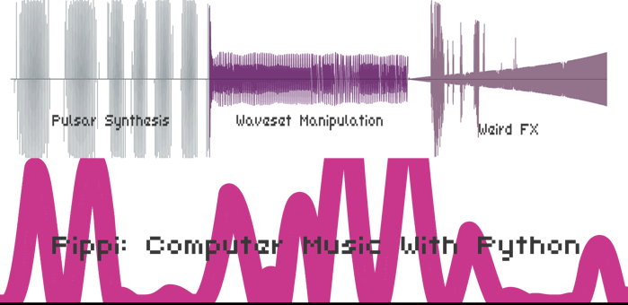

Home

This ugly but useful graph with insets and labels was drawn with pippi
Pippi: Computer music with python
v2.0.0 - Beta 4 (In Development)
What is this?
Pippi is a computer music library for python.
It includes a few handy data structures for music like
SoundBuffer & Wavetable, which are operator-overloaded
to make working with sounds and control structures simpler.
It also includes a lot of useful methods for doing common and not-so-common transformations to sounds and control structures.
from pippi import dsp sound1 = dsp.read('sound1.wav') sound2 = dsp.read('sound2.flac') # Mix two sounds both = sound1 & sound2 # Apply a skewed hann Wavetable as an envelope to a sound enveloped = sound * dsp.win('hann').skewed(0.6) # Or the same, via a shortcut method on the `SoundBuffer` enveloped = sound.env('hann') # Synthesize a 10 second graincloud from the sound, # with grain length modulating between 20ms and 2s # over a hann shaped curve. cloudy = enveloped.cloud(10, grainlength=dsp.win('hann', dsp.MS*20, 2))
It comes with several oscs:
- Pulsar - a pulsar synthesis engine - Pulsar2d - a 2d morphing pulsar synthesis engine - Tukey - a tukey-window-based osc with waveshape modulation between square-like and sine-like - Osc - an everyday wavetable osc - Osc2d - a 2d morphing wavetable osc - Fold - an infinite folding wavetable osc - Bar - a bar physical model (from Soundpipe) - Pluck - a plucked string physical model (adapted from JOS) - Alias - a highly aliased pulse train osc
And many built-in effects and transformations:
- Easy independent control over pitch and speed for any `SoundBuffer` - Paulstretch - Several forms of waveshaping and distortion including a crossover distortion ported from supercollider - Sweapable highpass, lowpass, bandpass and band reject butterworth filters from Soundpipe - Lots more!
As well as support for pitch and harmony transformations and non-standard tuning systems
from pippi import tune # Get a list of frequencies from a list of scale degrees frequencies = tune.fromdegrees([1,3,5,9], octave=3, root='a', scale=tune.MINOR, ratios=tune.JUST) # Get a list of frequencies from a chord symbol using a tuning system devised by Terry Riley frequencies = tune.chord('ii69', key='g#', octave=5, ratios=tune.TERRY) # Convert MIDI note to frequency freq = tune.mtof(60) # Convert frequency to MIDI note note = tune.ftom(440.0) # Convert a pitch to a frequency freq = tune.ntf('C#3')
And basic graphing functionality for any SoundBuffer or Wavetable -- some dumb examples pictured in the banner above.
from pippi import dsp sound = dsp.read('sound.wav') # Render an image of this sound's waveform sound.graph('mysound.png') # Render an image of a sinc wavetable with a label and scaled range dsp.win('sinc').graph('sinc.png', label='A sinc wavetable', y=(-.25, 1))
As well as other neat stuff like soundfont rendering support via tinysf!
from pippi import dsp, soundfont # Play a piano sound from a soundfont with general MIDI support (program change is zero-indexed) tada = soundfont.play('my-cool-soundfont.sf2', length=30, freq=345.9, amp=0.5, voice=0) # Save copy to your hard disk tada.write('tada.wav')
Installation
Pippi requires python 3.6+ which can be found here:
https://www.python.org/downloads/
The 3.5.x branch of python might work too, but is untested.
To use the most recent release from pip (currently 2.0.0 beta 3) just:
pip install pippi
But! Please see below about installing the latest version from source, there are a lot of new features in the most recent beta.
Tutorials
There are annotated example scripts in the tutorials directory which introduce some of pippi's functionality.
Beyond arriving at a good-enough stable API for the 2.x series of releases (and fixing bugs), my goal during the beta phase of development is to deal with the lack of documentation for this project.
Install from source
raspbian buster users: you must install the
libatlas-base-devpackage withaptto build the latest version of numpy.
To install pippi:
make install
Which does a few things:
- Installs python deps, so make sure you're inside a virtual environment if you want to be!
- Sets up git submodules for external libs
- Builds and installs Soundpipe
- Builds and installs pippi & cython extensions
Please let me know if you run into problems!
To run tests
make test
In many cases, this will produce a soundfile in the tests/renders directory for the corresponding test. (Ear-driven regression testing...)
During the beta I like to keep failing tests in the main repo, so... most tests will be passing but if they all are passing, probably you are living in the future and are looking at the first stable release.
There are also shortcuts to run only certain groups of tests, like test-wavesets -- check out the Makefile for a list of them all.
Hacking
While hacking on pippi itself, running make build will recompile the cython extensions.
If you need to build sources from a clean slate (sometimes updates to pxd files require this) then run make clean build instead.
Thanks
Project Nayuki for a compact FFT! (Used in SoundBuffer.convolve())
Paul Batchelor for all the goodness in Soundpipe that has made its way into Pippi. (See the fx and bar modules.)
Bernhard Schelling for his TinySoundFont library used in the soundfont module.
Nando Florestan for his small public domain GM soundfont used in the test suite.
Pixeldroid for their OFL licensed console font used for labeling graphs.